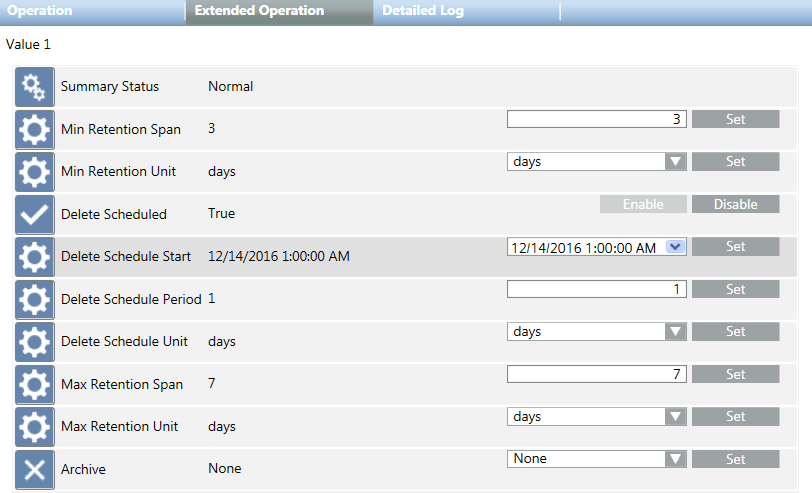

[Concept 4] Retain Values from Individual Data Points
Scenario
You want to create two archive groups, one with a retention period of seven days and one with a retention period of three months. The age of the data is checked daily. By setting a maximum retention period, for example, 7 days, you want to ensure that the oldest data is deleted automatically without being archived. All data points that have not been assigned to a 7 days custom archive group are saved in the Long Term Storage.
Create Custom Archive Groups
- System Manager is in Engineering mode.
- System Browser is in Management View.
- Custom Long Term Storage groups with monthly or yearly time slicing intervals are created in SMC.
NOTE: If a storage is full before the periods ends, the system automatically creates an additional storage.
- Select Project > Management System > Servers > Main Server > History Database > Archive Groups Custom.
- Click the Object Configurator tab.
- Click New
 and select New HDB Custom Archive Group.
and select New HDB Custom Archive Group. - In the New object dialog box, enter the name and description.
- Click OK.
- In System Browser, select the newly created custom archive group.
- In the Operation tab, select the Archive property.
a. In the drop-down list, select the desired storage.
b. Click Set. - Repeat steps 3 to 7 for all required custom archive groups.
Assign Data Points to an Activity and Events Custom Archive Group
- Custom archive groups for Activity and Event Log data are created and set to Archive.
- Perform either of the following:
- Select Project > Field Networks > [Network] > Hardware > [Device] > [Data point]. The folder path may vary by view or subsystem.
- Select multiple objects for bulk engineering (See Bulk Engineering Objects).
- Click the Object Configurator tab.
- In the Main expander, select the Archive group field.
a. In the drop-down list, select the desired archive group.
b. Click Save .
. - Repeat steps 1 to 3 for all needed data points.
Assign Data Points to the 7 Days Custom Archive Group
- The 7 days custom archive groups is created.
- Do one of the following:
- Select Project > Field Networks > [network] > Hardware > [device] > [data point]. The folder path may vary by view or subsystem.
- Select multiple objects for bulk engineering (See Bulk Engineering Objects).
- Click the Object Configurator tab.
- In the Main expander, select the Archive group field.
a. In the drop-down list, select the desired archive group.
b. Click Save. - Repeat steps 1 to 3 for all needed data points.
Set the Retention Time for Custom Archive Group to 7 Days
- The values of a particular data point are only to be retained for 7 days.
- Select Project > Management System > Servers > Main Server > History Database > Archive Groups Custom > [7 days archive group].
- Select the Extended Operation tab and set the parameters as in the picture.

- The deletion schedule is configured and the age of the data is checked every day.
Assign Default Archive Groups to Storage
- Select Project > Management System > Servers > Main Server > History Database > Archive Groups.
a. Select Activity Log and continue with step 2 to 4.
b. Select Event Log and continue with step 2 to 4.
c. Select Incident Log and continue with step 2 to 4.
d. Select Value Log and continue with step 2 to 4. - In the Extended Operation tab, select the Archive property.
- In the Archive drop-down list, always select the same storage.
- Click Set.

NOTE:
The steps mentioned above are applicable for new data logged into the system.
For data already logged into the system following steps additionally need to be performed:
1. In System Browser, select the newly created custom archive group.
2. In the Operation tab, select the Archive property.
- a. In the drop-down list, select the storage to None.
- b. Click Set.
- c. In the drop-down list, select the desired storage.
- d. Click Set.
3. Repeat these steps for all needed custom archive groups.